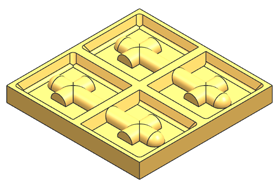
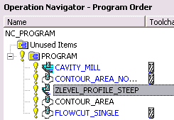

Open mnf10_planar_project.

Choose Start→Manufacturing.
On the Navigator toolbar, click Program Order View .
Right click in the Operation Navigator window and choose Expand All.
Right-click PROGRAM and choose Replay .
The existing fixed axis surface contouring operations semi-finish and finish the part. You will create three more operations that will rough out the initial material, semi-finish the steep areas, and finish the top face of the part, and then place them in the correct program sequence as shown.
